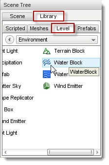
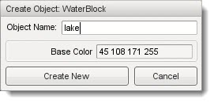
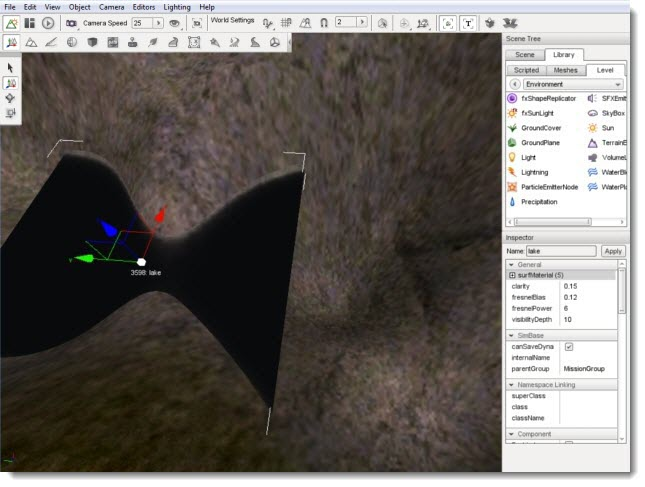
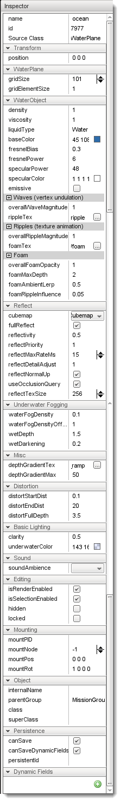

Introduction
The WaterBlock object can add a lot of realism to your level's environment. Primarily, you should use a WaterBlock to simulate isolated bodies of water with a limited size. They do not necessarily need to be small, but a WaterPlane can simulate a massive/endless body of water.
Adding a WaterBlock
To add a water block, switch to the Object Editor tool. Locate the Library panel and click it. Click on the Level tab and then double-click the Environment folder. Locate the WaterBlock entry.

Double-click on the Water Block entry. A dialog box will appear:

Enter a name for your Water Block then click the Create New button. A square body of water will be added to the scene. This is your WaterBlock. Like any other object, you can manipulate its transform using the gizmos.
(click to enlarge)

WaterBlock Properties
Additional properties can be accessed with the Inspector pane. To change a WaterBlocks properties using the Inspector Pane click the Scene tab, then click the name of your new Water Block object. The Inspector pane will update to display the current properties of your new sun.

Name: TypeName. Optional global name of this object.
id: TypeCaseString. SimObjectId of this object. Read Only.
Source Class: TypeCaseString. Source code class of this object. Read Only.
Transform
position: MatrixPosition. Object world position.
WaterBlock
gridSize: TypeF32. Duplicate of gridElementSize for backwards compatibility.
gridElementSize: TypeF32. Spacing between vertices in the WaterBlock.
WaterObject
density: TypeF32. Affects buoyancy of an object, thus affecting the Z velocity of a player (jumping, falling, etc).
viscosity: TypeF32. Affects drag force applied to an object submerged in this container.
liquidType: TypeRealString. Liquid type of WaterBlock, such as water, ocean, lava. Currently only Water is defined and used.
baseColor: TypeColorI. Changes color of water fog, which is what gives the water its color appearance.
fresnelBias: TypeF32. Extent of fresnel affecting reflection fogging.
fresnelPower: TypeF32. Measures intensity of affect on reflection based on fogging.
specularPower: TypeName. Power used for specularity on the
water surface (sun only).
specularColor: TypeColorF. Color used for specularity on the
water surface (sun only).
emissive: TypeBool. When true, the water colors do not react
to changes in environmental lighting.
Waves (vertex undulation)
overallWaveMagnitude: TypeF32. Master variable affecting entire body of water undulation.
rippleTex: TypeImageFilename. Normal map used to simulate small surface ripples.
Ripples (texture undulation)
overallRippleMagnitude: TypeF32. Master variable affecting
the entire surface of the WaterBlock.
foamTex: TypeImage Filename. Diffuse texture for foam in
shallow water (advanced lighting only).
Foam
overalFoamOpacity: TypeF32. Opacity of foam texture.
foamMaxDepth: TypeF32. Maximum depth for foam texture
display.
foamAmbientLerp: TypeF32. Interpolation for foam settings.
foamRippleInfluence: TypeF32. Intensity of the ripples.
Reflect
cubemap: TypeCubemapName. Cubemap is used instead of
reflection texture if fullReflect is off.
fullReflect: TypeBool. Enables dynamic reflection rendering.
reflectivity: TypeF32. Overall reflectivity of the water
surface.
reflectPriority: TypeF32. Affects the sort order of reflected
objects.
reflectMaxRateMs: TypeF32. Affects the sort time of reflected
objects.
reflectDetailAdjust: TypeF32. Scale up or down the detail
level for objects rendered in a reflection.
reflectNormalUp: TypeBool. Always use Z up as the reflection
normal.
useOcclusionQuery: TypeBool. Turn off reflection rendering
when occluded (delayed).
reflectTexSize: TypeF32. Texure size used for reflections
(square).
Underwater Fogging
waterFogDensity: TypeF32. Intensity of underwater fogging.
waterFogDensityOffset: TypeF32. Delta, or limit, applied to
waterFogDensity.
wetDepth: TypeF32. The depth in world units at which full
darkening will be received giving a wet appearance.
wetDarkening: TypeF32. The refract color intensity scaled at
wetDepth.
Misc
depthGradientTex: TypeImage filename. 1D texture defining the
base water color.
depthGradientMax: TypeF32. Depth in world units, the max
range of the color gradient texture.
Distortion
distortStartDist: TypeF32. Determines start of distortion
effect where water surface intersects.
distortEndDist: TypeF32. Max distance that distortion
algorithm is performed.
distortFullDepth: TypeF32. Determines the scaling down of
distortion in shallow water.
Basic Lighting
clarity: TypeF32. Relative opacity or transparency of the
water surface.
underwaterColor: TypeColor. Changes the color shading of
objects beneath the water surface.
Sound
soundAmbience: TypeSFXAmbienceName. Ambient sound environment
when listener is active.
Editing
isRenderEnabled: TypeBool. Toggles whether the object is
rendered.
isSelectionEnabled: TypeBool. Toggle whether this object can
be selected in the editor.
hidden: TypeBool.Toggle visibility in editor.
locked: TypeBool. Toggle whether the object can be edited.
Mounting
mountPID: TypePID. Unique identifier of the mount.
mountNode: TypeS32. Node where the mount occurs.
mountPos: TypeS32. Offset for positioning the node.
mountRot: TypeS32. Rotation of this object in relation to
the mount node.
Object
internalName: TypeString. Non-unique name used by child objects
of a group.
parentGroup: TypeString. Group object belongs to.
class: TypeString. Links object to script class namespace.
superClass: TypeString. Links object to script super class
(parent) namespace.
Persistence
canSave: TypeBool. Toggle whether the object can be saved in
the editor.
canSaveDynamicFields: TypeBool. True if dynamic fields (added at runtime) should be saved, defaults to true.
Conclusion
Regarding appearance, your WaterBlock can simulate any body of water you desire. Large or small, murky or clear, wavy or calm, the properties provide an extremely flexible system that can be tweaked to the smallest detail.
You can read the Lake Tutorial for a full walkthrough on using the WaterBlock object.
|
{kind=link}